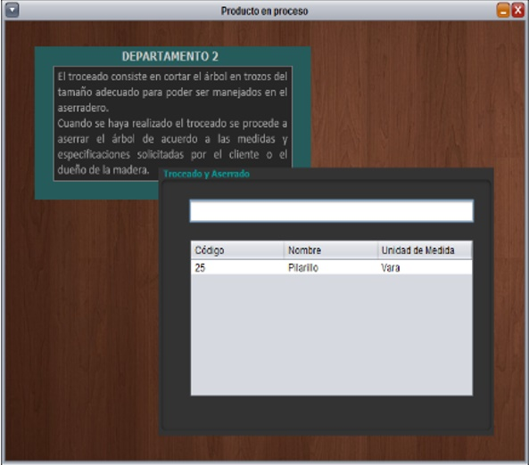
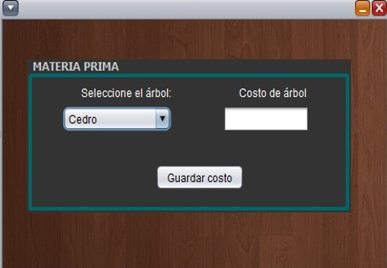

En el menú Contabilidad de Costos se encuentran las siguientes opciones, como se menciona anteriormente algunas opciones se habilitarán hasta cerrar el periodo contable, por lo tanto, solo podemos acceder a las opciones de: Productos, Inventario y Departamentos.
Si se desea Consultar Producto existe en el sistema o Gestionar Producto (Lo que significa agregar, eliminar y buscar productos) es necesario hacer clic en la opción Productos.
Para registrar eventos de entrada o salida de productos e inclusive eliminar en el Kardex es necesario seleccionar de la lista desplegable la opción Inventario y luego nos mostrara la opción de Kardex.
Para poder observar el producto en proceso de la empresa podemos seleccionar la opción de departamentos, en donde se encuentran los tres departamentos por los que pasa un producto en la empresa, los cuales son: Derramado y Tala, Troceado y Aserrado, Acabado de forma que el usuario pueda consultar el proceso productivo en el que se encuentra determinados materiales de materia prima que se transforman en cada departamento y finalizan en producto terminado.

La opción Empleados permite al usuario ver la planilla de pago de los empleados de la empresa, en la que las opciones del lado derecho permiten agregar a un empleado y calcular su salario
Costeo dentro de esta opción mostrara una lista despegable que contiene las opciones de: Materia Prima, en la cual podremos ingresar el costo del árbol a talar.

En la siguiente opción encontramos las alternativas que nos permiten saber el costo por tener un producto en cada departamento de su proceso productivo hasta llegar al último que es el de Acabado, en el cual nos muestra el total de los costos incluyendo el costo unitario final del producto por vara.
En el proceso de derramado y tala seleccionamos el árbol a talar y la cantidad para la cual nos calcula el costo, estos costos se guardan y pasan a formar parte del siguiente departamento.
En el departamento de Aserrado, al dar clic en el botón calcular costos nos muestra los costos del departamento, además tenemos la opción de verificar los CIF incurridos durante el período contable
En el departamento de Acabado ingresamos el número de varas terminadas, los porcentajes de avance de materia prima, CIF, etc., y automáticamente nos aparecen los costos en el lado derecho